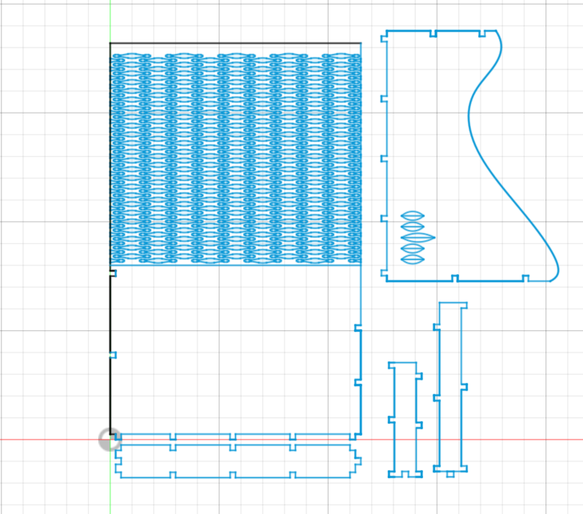
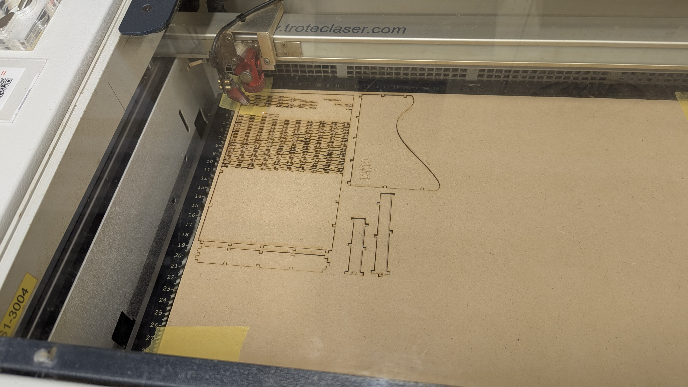
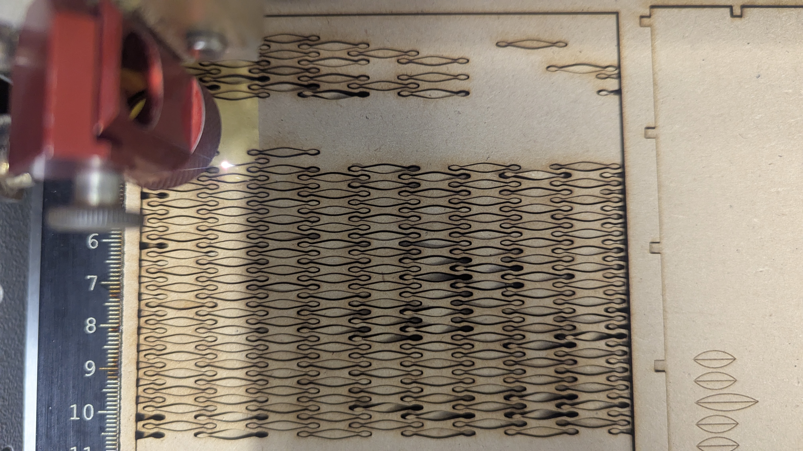
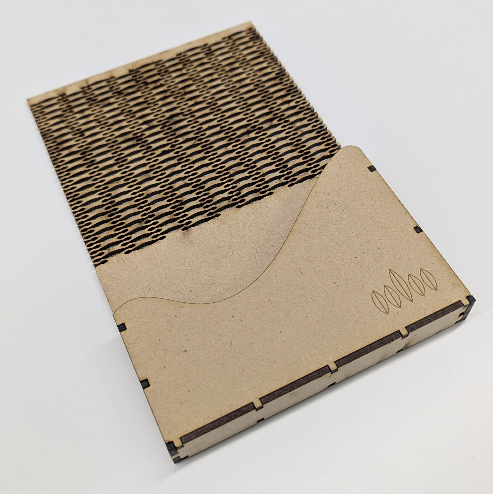
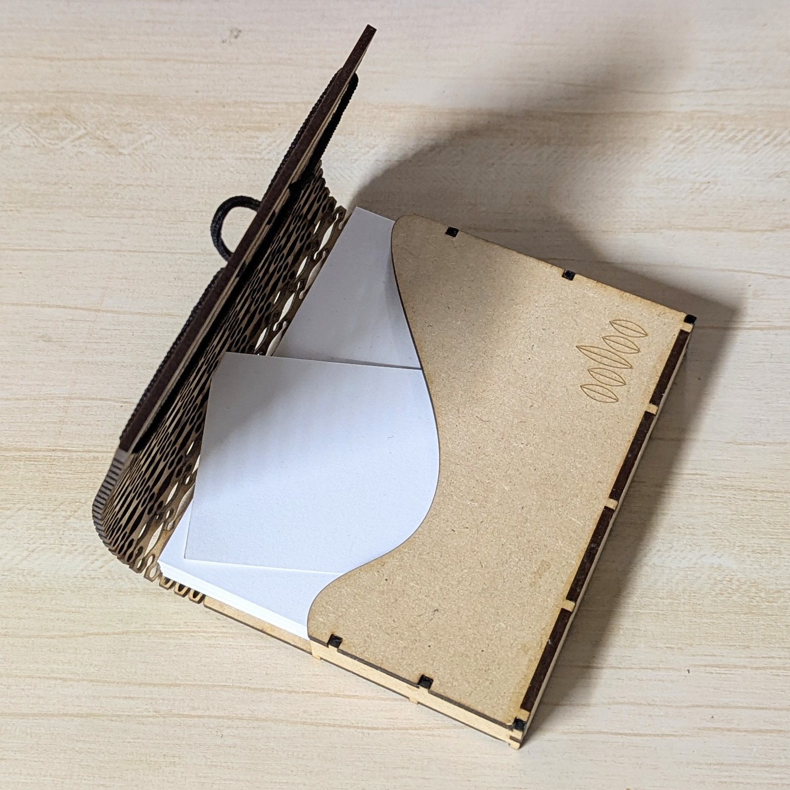
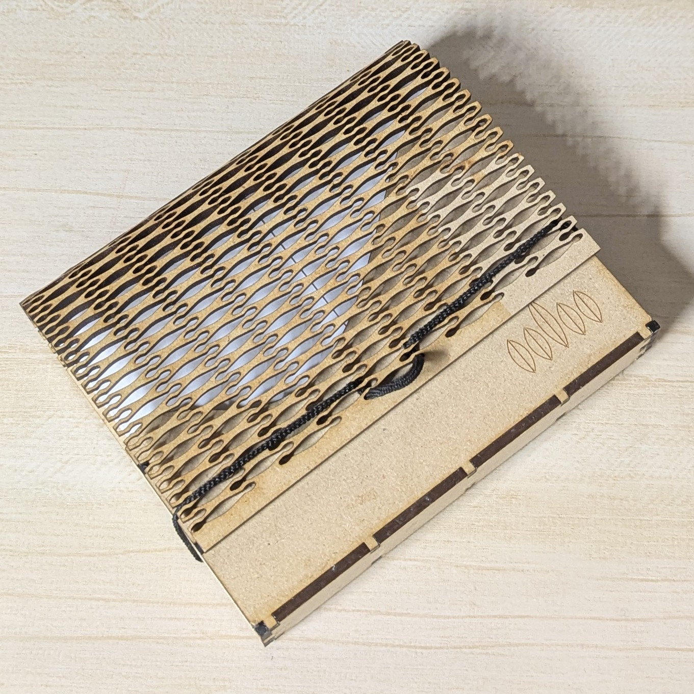

Ray's Portfolio
XBP
Anthropology×Design×Technology×Business
第2回 : レーザーカッターを使用した物作り
身近なものと関連付けて、今の関係を変えるようなアイデア
- 身近なもの：名詞
- 現在の関係：お渡しできるものがなく、頂いた名刺も財布の上に置いている。
将来持つものだという認識。
【将来という認識を改め、目標の経営者までの距離を近づける第一歩】
- これを見たとき、何度躓いても目標に向けて再び立ち上がれるような名刺入れを作る。
アイデアを形にする
１,設計図

ナローウェーブ参考：trotec
FUSIONで設計。その後illustratorで整える。
２，レーザーカッターで作成


３，完成

４,振り返り


- 少し大きくなってしまった。名刺を縦向きで入れて、２枚並べられるくらいの大きさ。
- 閉めたときの固定具を考えていなかった。ゴムをつけることで解決。
- レーザーカッターに固定する際、マスキングテープを使用したが、その部分だけ焼け跡がつかず、変に明るい部分が出来た。
- FUSIONで設計している際、ナローウェーブの部分が多すぎて重くなってしまった。
↑一番上に戻る↑